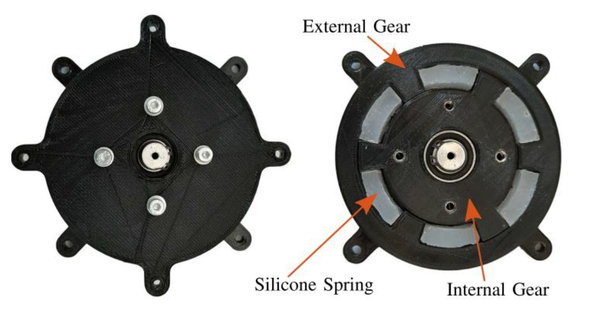
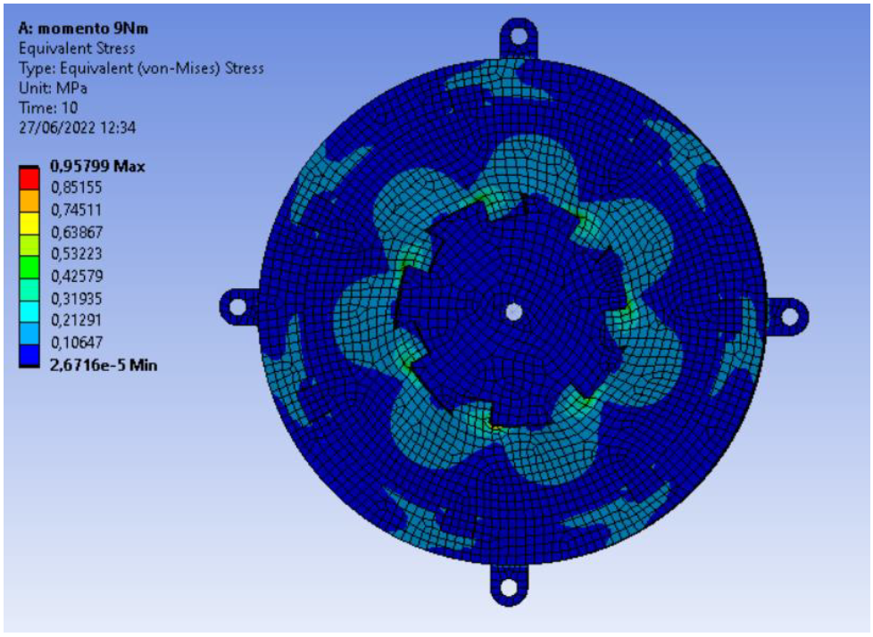
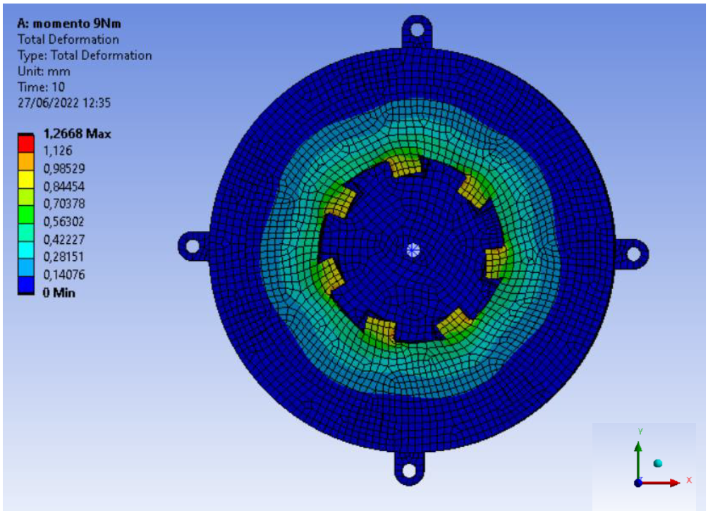
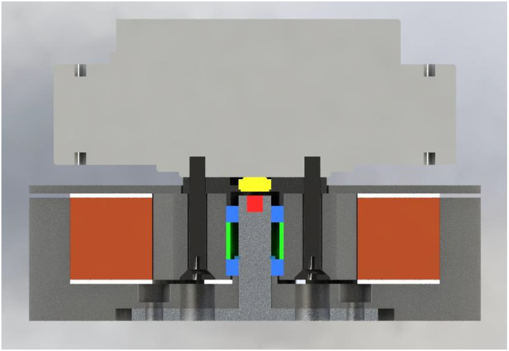

The project focused on redesigning an existing Series Elastic Actuator concept into a compact Series Visco-Elastic Joint intended for the shoulder joint of a robotic exoskeleton. The reference device used separate silicone blocks placed between toothed internal and external gears; however, this layout generated friction against plastic components and gap formation when only three silicone blocks worked in compression at a time.
The proposed solution replaces the separated silicone blocks with a single circular toothed silicone element, designed to work both in compression and tension through internal and external teeth. This configuration was introduced to improve control behavior, reduce gap formation, and maintain a compact assembly compatible with the existing motor and encoder hardware.
Reduced radial and axial envelope for integration into an exoskeleton shoulder joint.
Mechanical compatibility with the AK80-9 T-motor and existing encoder components.
Silicone element sized for 9 Nm torque and limited angular displacement.
SVEJ removable as an independent block from the motor while keeping the joint assembled.
The core design choice was the introduction of a single annular silicone element with internal and external teeth. The internal teeth were designed larger than the external teeth because they are directly loaded by the rotor and therefore experience higher stresses. The silicone ring geometry was first estimated with a simplified linear approach, then qualitatively assessed with a nonlinear hyperelastic model.
Mold Max 60 was selected as the silicone material available in the laboratory. The preliminary sizing was performed by imposing a maximum angular displacement of 20° under a 9 Nm applied torque. The design also included a simplified shear verification of the silicone teeth.
A qualitative verification was performed in Ansys Workbench using the SolidWorks assembly composed of rotor, silicone element, and external gear. The silicone behavior was modeled using a Neo-Hookean hyperelastic formulation, while the rotor was treated as a rigid body. The external gear was fixed, and a torque was applied to the rotor. Bonded and frictional contacts were used depending on the interface.


The assembly was constrained by the available AK80-9 motor, RM08 encoder, magnet, and encoder holder. The design includes pass-through holes on the shaft and external gear to allow the SVEJ block to be removed from the motor while remaining assembled. The shaft–external gear connection uses six screws and six nuts, with hexagonal nut seats introduced because threading nylon components was not suitable.
The magnet seat was integrated into the shaft, maintaining a 1 mm distance from the encoder. Bearings are assembled from above and press-fitted on the inner ring, while axial positioning is managed through a spacer and Seeger ring. Two Teflon rings were added on the upper and lower faces of the silicone element to reduce radial rubbing between silicone and nylon.

The external gear and rotor were designed for nylon rapid prototyping, accounting for the manufacturing limitations of layered fabrication by oversizing holes and accepting general machining tolerances. The shaft was designed in aluminum to achieve tighter tolerances where rolling bearings are mounted. The silicone element is produced using a two-part mold composed of matrix and punch, clamped with four bolts.
The following links are prepared for the detailed drawings of the main manufactured parts and mold components.
STL files are provided for visualization of the rapid-prototyped and mold components.
The final concept achieved a compact SVEJ assembly, with the reference documentation reporting an overall diameter of approximately 110 mm, a joint height of 33 mm, and 73.5 mm including the motor. The toothed silicone configuration addresses the gap problem of the previous block-based design, while Teflon rings partially mitigate silicone–nylon friction.
Future work includes physical manufacturing, controller design, experimental dynamic testing under torsional loading, and experimental identification of silicone damping.